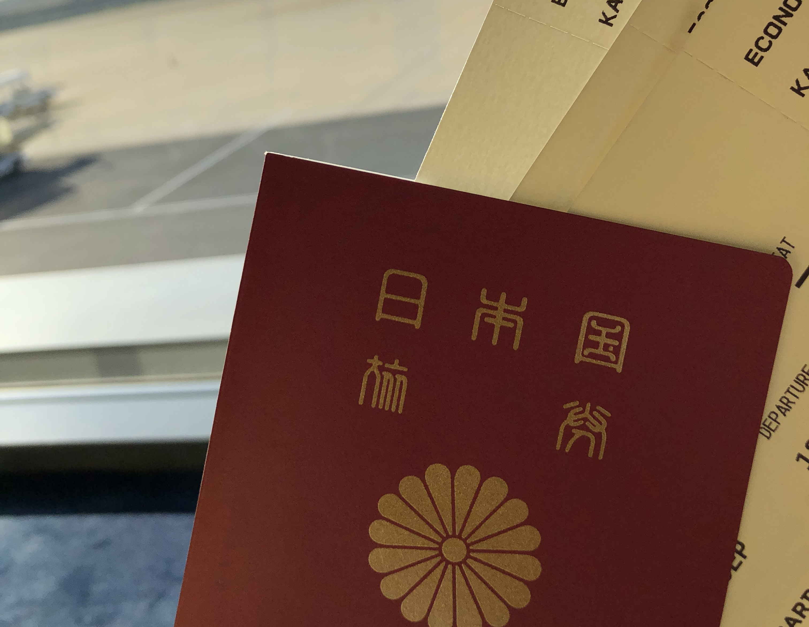
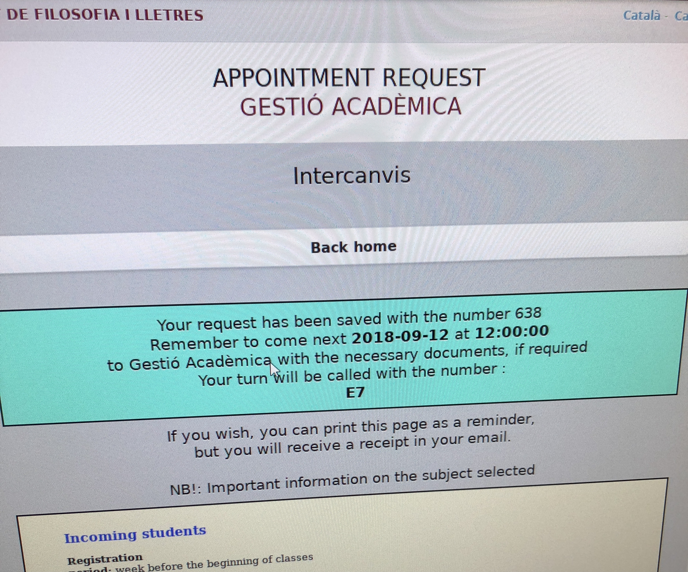
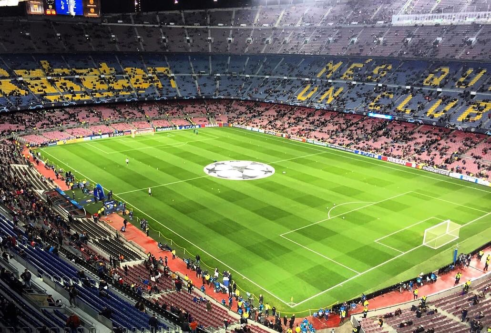
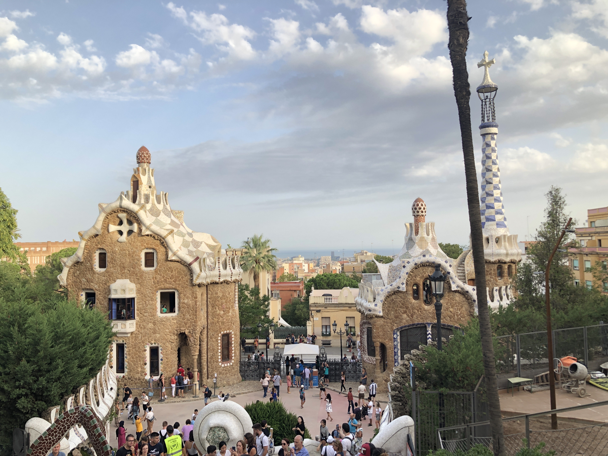
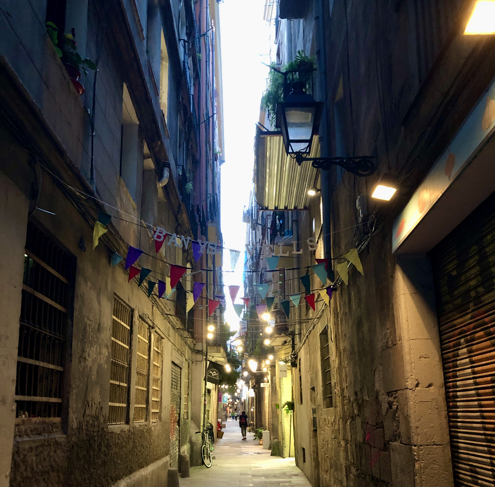
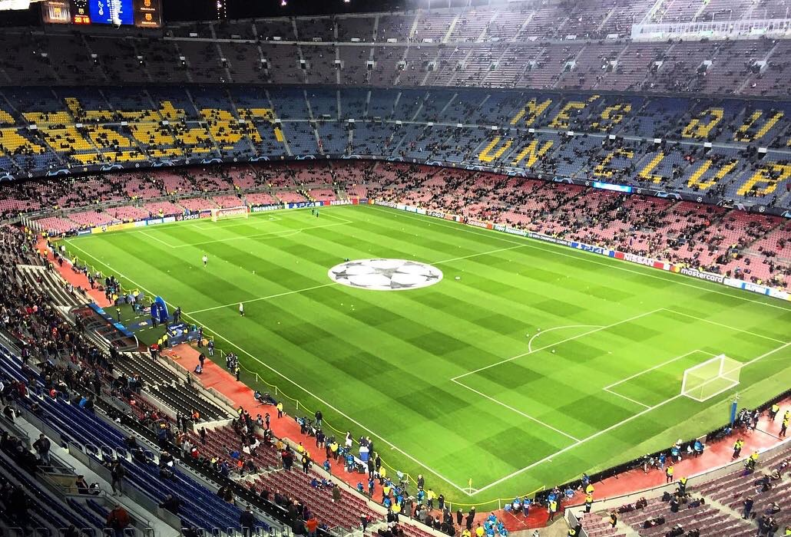
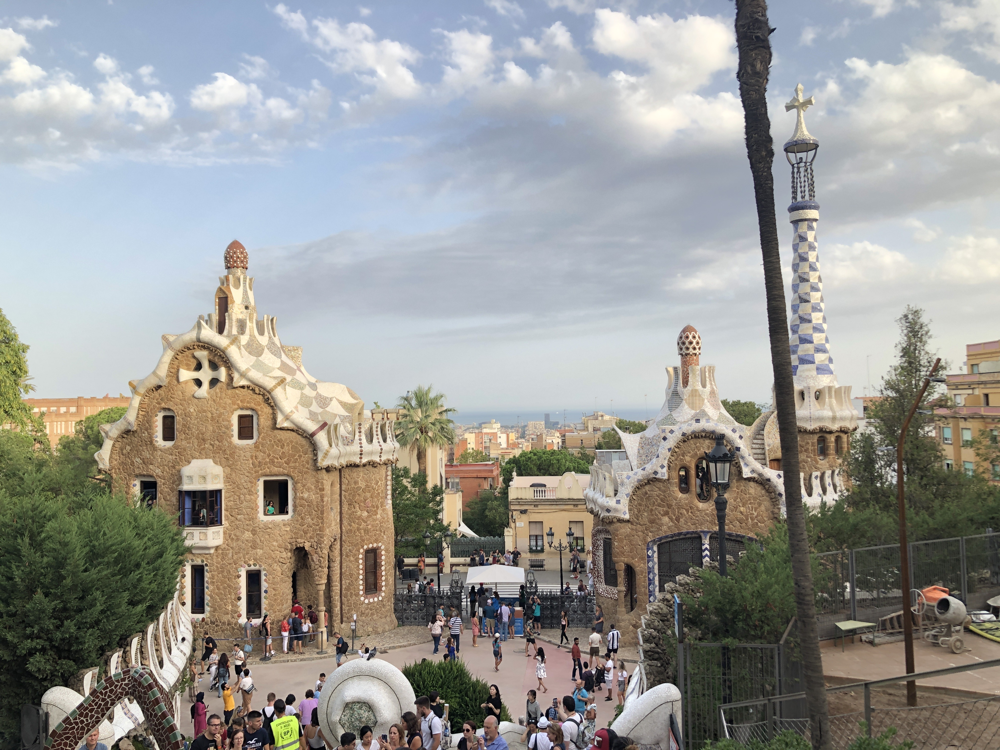
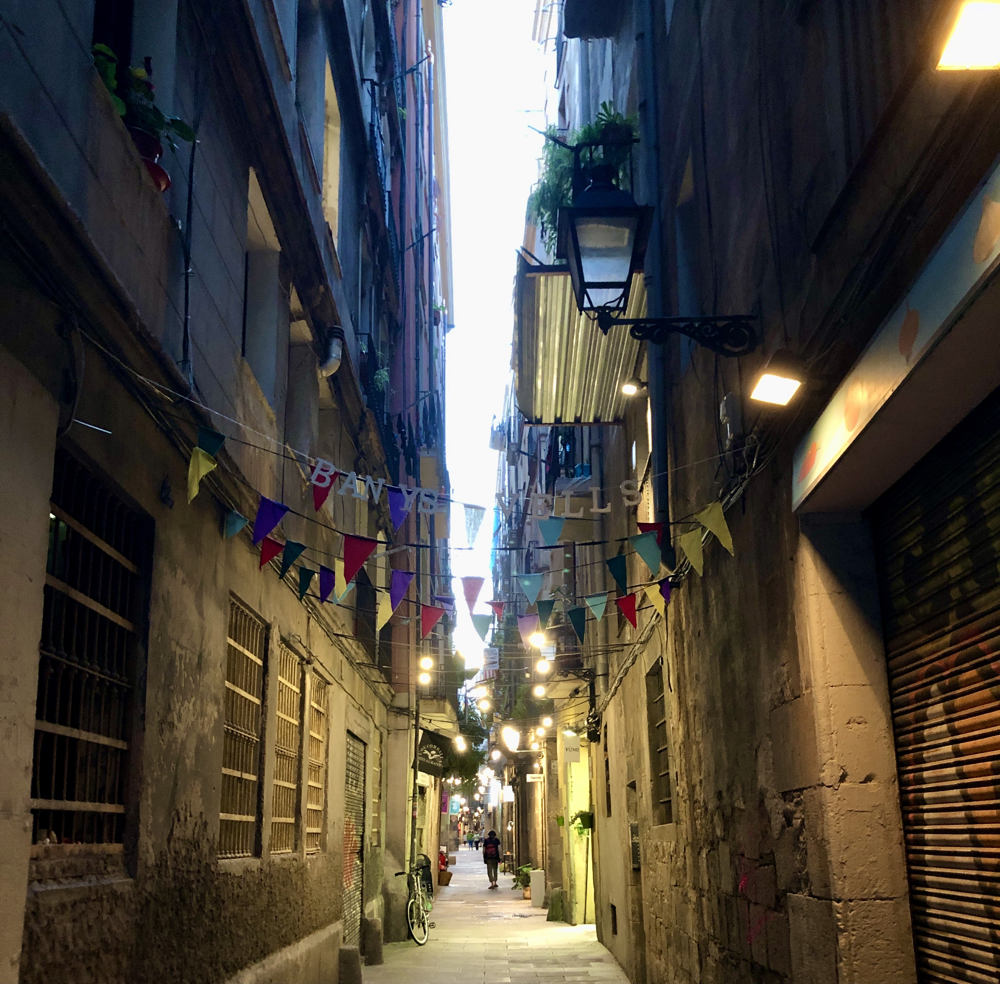

Living in Barcelona
ただ、勉強には全くむいてません。勉強面だけで見ると留学先として選んだのは失敗だったかもしれません笑
僕のストーリーが皆さんの参考・インスピレーションになれば幸いです。
楽しんで下さい！
Bienvenido a Barcelona

Preparation for study abroad to Spain
スペイン留学準備
この留学準備にはめちゃめちゃ悩まされました。必要な事はビザ取得と履修登録だけです。
え、これだけ？ 大使館行ったら終わりやんってなりますよね。これがめっちゃ時間かかるんです。


What you need for getting a VISA
ビザ取得に必要な物
- 留学先からの入学許可書
- 宿泊先の住所
- パスポート
University Life
大学生活
大学に入学手続きに行った瞬間から違和感しか感じなかったです。
完全に舐めてました。後々調べたら、慶応大学と同じ学力の大学だったみたいです笑
日本人が大学に行く目的と海外の子等が大学に行く理由って全然違うと感じました。
国の制度とか文化もあるので、どちらが正しいのかわかりませんが、
日本は人生最後の夏休みとして遊ぶため、海外はその分野の専門家になるためにって感じがします。
Class difficulties
授業レベル
僕がとったクラスでは、授業中に寝てる生徒1人もいなかったし、携帯を触ってる生徒もいませんでした。
教授の指示で検索する時やPDFを確認する時は使ってましたけど。
あと、授業への積極性がやばいです。そんなんどうでもええやんって問題にも手を挙げて質問してました。
授業のペースもレベルが高くて早いので、板書を取るのに必死でした。
そして、課題の量も半端なかったです。明後日の授業までに50ページ読んできてって普通に言います笑
予襲復習は毎日3時間はやってました。決して盛ってないです笑
Home
スペインの家
理由は単純で、大学が市内から電車で1時間かかるので市内で遊ぶのに不便だったからです。
後々、大学の寮の悪いことしか聞かなくなったので、最初から市内で自由に生活できて良かったです。
22時には消灯、冷暖房が効かない、シャワーがでない等々
Day 1
1日目
僕の感覚的にどこも住めば都なんであんまり気にはならなかったですけど、最初はショックも受けました笑
バルセロナ空港に着いた瞬間に、SIMカード買ってないことに気づいてどうやって家行こってなりました笑
空港のWiFi使ってUBER拾って何とか家着いたんですけど、人が住むとこちゃうやんってとこでした。
今となっては普通なんですけど、飛行機で一睡もしてなかったので、頭おかしなってました笑
まず、アパートの玄関扉が開かない、、終わったと思いました。
片っ端からインターフォン鳴らすっていう、究極の迷惑行為にでました。
Hola, Quien eres? Puedo ayudarte? いや、分かるか！英語しゃべれや！って思いました笑
入れたと思ったらエレベーターが今にも壊れそうで、僕とスーツケースでパンパン。サイズ感バグってました。
何とか家に入れてルームメイトと挨拶して、晩御飯を食べて1日目が終わったって感じですね。
ちなみにルームメイトは、イタリア人、ドイツ人、オーストリア人、韓国人と僕の5人でした。
House comfort
家の快適さ
街の中心へは2駅、サグラダファミリアへは徒歩20分。散歩がてらよく行ってました。
リビングは写真の3倍ぐらいの広さがあったと思います。ルームメイト達とよく食事したり飲んだりしてました。
キッチンは右にもうちょっと続いてるって感じですね。テラス(屋上)が最高でした。
海、サグラダファミリア、夕日が一望できるアパートって滅多にないと思います。
シャワーとトイレがセットの部屋が２部屋ありました。もちろん一人一部屋ありましたが、写真はないです。
ちなみに下の写真は僕の部屋からの眺めです。家賃は確か380€だったと思います。穴場物件でした笑
How to enjoy Barcelona
バルセロナでの遊び方
ご飯は美味しい、街並みは綺麗、気候は最高、山も海もある。完璧だと思います。
カフェで朝活して、昼にはショッピングに行く事も、美味しいタパスを食べながらお酒を飲むこともできます。
僕がオススメするお店はここです。Taverna El Glop
家から近かったので良く行ってました。最寄りえきはL3のLessepsです。
夜には、バーでゆっくり飲むのも良し、クラブで暴れるのも良し。
観光場所を周るのもありかもしれません。サグラダファミリア、カサバトリョ、カサバチオ、グエル公園など
ビーチでゆっくりするのもありですね。カンプノウでのサッカー観戦もお忘れなく！！
ゴシックエリアで一点物の店を周るのも楽しいですよ。迷路みたいな、中世から様を変えないエリアなので歴史も感じれます。
 





僕の経験が、皆さんが少しでも海外で生活するイメージに繋がれば幸いです。
僕は将来的にバルセロナに移住する予定です。
海外で挑戦したい方がいれば、頑張りましょう！
どんなことも楽しんで下さい。全て素晴らしい経験・思い出になります。